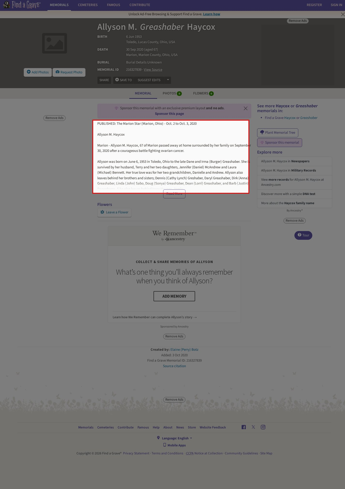

Justin Danenbergs b. 1975
Peter's first cousin.
Living. As for every living relative on this site, the birth date is given by year only, and no current address is shown.
Also recorded as Justin Erik Danenbergs.
Justin Danenbergs was born in 1975 in Ohio, United States2,3,4, the son of Kalvis Danenbergs and Melinda Lee Berger32,33. He married Barbara L. on 14 Nov 2003 in Ohio, United States34.
Family
- Parents
- Kalvis Danenbergs b. 1946 and Melinda Lee Berger b. 1947 documented
- Wife
- Barbara L. b. 1968 · married on 14 Nov 2003 in Ohio, United States34
Life events
| Event | Date | Place and details |
|---|---|---|
| Born | 1975 | Ohio, United States Preferred version: Automatic: the best-supported value (primary records count most; the 2015 tree least). Not yet reviewed; add a preference in data/curation/structure.yaml.2,3,4 |
| Lived | bet 1975 and 1994 | Midland, Clinton County, Ohio, United States7 |
| Born | 1976 | According to an online family tree and the family's 2015 tree5,6 |
| Note | 3 Sep 1992 | Columbus, Ohio, United States Justin Danenbergs's wife Barbara Lynn Greashaber graduated Cum Laude from The Ohio State University College of Pharmacy (Dean: John M. Cassady) with the degree of Bachelor of Science in Pharmacy at The Ohio State University's 321st Commencement (Summer 1992) held on 3 September 1992 at 9:30 a.m.…23 |
| Note | bet 1993 and 2020 | Dublin, Ireland Public records for Justin Danenbergs's wife Barbara Lynn (Greashaber) Danenbergs (born 1968) trace her indexed addresses from 1993 to 2020: (1) her parents Dane and Irma Greashaber's home at [address omitted] (1993); (2) [address omitted]…24 |
| Education | bet 1994 and 1999 | Columbus, Ohio, United States Bachelor's degree in Pharmacy, The Ohio State University, 1994–1999. Activities: the Stadium Scholarship Dormitory (the merit-and-need scholarship hall built into the south stands of Ohio Stadium) and Rho Pi Phi ("Ro Pi Phi"), the pharmacy fraternity.16 |
| Education | 28 Jan 1994 | Blanchester, Ohio, United States Played varsity boys' basketball during his senior year at Blanchester High School (Blanchester, Clinton County, Ohio) in the Southern Buckeye Conference; in the Friday, 28 January 1994 conference home game against Williamsburg High School (Williamsburg 97, at Blanchester 86), he scored 7 points on…17 |
| Education | 12 May 1994 | Ohio, United States Competed in varsity boys' tennis for Blanchester High School in the OHSAA Sycamore Division II Boys' Tennis Sectional Tournament held at Princeton High School on Thursday, 12 May 1994, playing doubles with partner Bradley; in the Doubles Second Round, Stout and Veverka of Kings High School…18 |
| Note | Sep 1994 | Columbus, Ohio, United States Tennis: US Latvian championships at Columbus, "septembra sākumā" (early September; the page gives no day numbers and does not name Ohio State). In the men's singles Roberts Bedrītis (Las Vegas) "vieglāk viņš uzvarēja J. Danenbergu (Deitona) 6-1, 6-1" (easily beat J. Danenbergs of Dayton 6-1, 6-1).…25 |
| Note | Sep 1994 | Columbus, Ohio, United States Laiks issue 853230 p.6, zone DIVL397; the whole-page overview shows the sports-page article headed 'Latviešu teniss — 1994' (a review of the 1994 tennis season; masthead date NOT read). Read by eye in the participant list (zoom on the left column; the left ~30 characters of each line fell outside…26 |
| Lived | bet 1995 and 1996 | Columbus, Ohio, United States8 |
| Lived | bet 1998 and 2000 | Columbus, Ohio, United States9 |
| Education | 11 Jun 1999 | Columbus, Ohio, United States Graduated from The Ohio State University College of Pharmacy (Dean: John M. Cassady) with the degree of Bachelor of Science in Pharmacy at The Ohio State University's 348th Commencement (Spring 1999) held on 11 June 1999 at 9:30 A.M. on The Oval (Presiding Officer: President William E. Kirwan),…19 |
| Work | bet 5 Aug 1999 and 16 Nov 2026 | Columbus, Ohio, United States Licensed as a Registered Pharmacist (R.Ph.) by the State of Ohio Board of Pharmacy under License Number 03223586, originally issued on 5 August 1999, and maintained in Active status with no board actions (current renewal effective 16 September 2025 through 15 September 2027, city of record…20 |
| Work | bet 1 Oct 1999 and 2026 | Dublin, Ireland His second LinkedIn profile (slug 'justin-danenbergs-797091166', location 'Columbus Metropolitan Area, OH, US', headline 'Diabetes Specialist Pharmacist | @Express Scripts Pharmacy Benefit Services', 59 connections) records six experience entries: (1) Pharmacist at Express Scripts Pharmacy Benefit…21 |
| Work | bet Oct 1999 and 2026 | Columbus, Ohio, United States A pharmacist with Medco and then Express Scripts for twenty-seven years, in and around Columbus, Ohio. The posts, with his own descriptions and dates: Pharmacist, Express Scripts, from October 1999; MTM Quality Manager, MEDCO, Columbus, Ohio Area, January–September 2010 ("I reviewed Medicare…22 |
| Lived | bet 2000 and 2020 | Dublin, Ireland10 |
| Lived | 8 Sep 2001 | Powell, Ohio, United States11,12 |
| Note | 3 Aug 2002 | Ohio, United States Named alongside his future wife Barbara Greashaber among the surviving children and partners in the obituary of Barbara's mother Irma Ann (Burger) Greashaber (born 13 January 1929 in Milan, Monroe County, Michigan, to Henry Burger; died 3 August 2002 at age 73 in Marion, Ohio; buried 7 August 2002…27 |
| Married | 14 Nov 2003 | with Barbara L. Ohio, United States34 |
| Lived | bet 9 Sep 2011 and 2026 | Columbus, Ohio, United States13,14 |
| Note | 12 Jul 2019 | Cleveland, Ohio, United States Donated $100.00 on 12 July 2019 to the Leukemia & Lymphoma Society's 2019 Cleveland Light The Night Walk fundraiser for 'Fundraising Page for Rob MacAdam-King' (team 'ScooterMac', organized by Rob MacAdam-King in memory of his brother Scot MacAdam-King, alongside $100.00 donations from Bob & Gina…28 |
| Note | bet 20 Feb 2020 and Nov 2026 | Columbus, Ohio, United States Justin Danenbergs's wife Barbara Lynn Danenbergs, R.Ph., CCRP practices as an Investigational Drug Services (IDS) Pharmacist at OhioHealth in Columbus, Ohio. She is listed on the Investigational Drug Services (IDS) Working Group Member Roster of the American Society of Health-System Pharmacists…29 |
| Note | 30 Sep 2020 | Ohio, United States Named with his wife Barbara ('Barb (Justin) Danenbergs') among the surviving siblings and in-laws in the obituary of his sister-in-law Allyson M. (Greashaber) Haycox (born 6 June 1953 in Toledo, Lucas County, Ohio, to Dane and Irma (Burger) Greashaber; died 30 September 2020 at age 67 in Marion,…30 |
| Note | 29 Oct 2026 | Identifiers: LinkedIn https://www.linkedin.com/in/justin-danenbergs-797091166 (member urn 663077923, provider id ACoAACeFxCMBXq5Tv_U0krZ4qJvHmoD-pZL1nsY), verified, 70 followers, 68 connections, third-degree from Peter — they are NOT connected; profile photograph…31 |
| Lived | Midland, Clinton County, Ohio, United States15 |
Possible records (not confirmed)
Records that may concern him, but don't settle it: an initial and a surname only, a family recollection, or a reading that needs a second look. Each links to the record.
- Other 1986-06-17/1994-05-13 Wilmington, Clinton County, and Cincinnati, Hamilton County, Ohio, USA: Eleven index records in 'Ohio, U.S., Newspapers.com Stories and Events Index, 1800's-current' (Ancestry Collection 50066, all with 'Topic: Other') and six search-result entries in GenealogyBank record newspaper items matching 'Justin Danenbergs' / 'Danenbergs' between 1986 and 1994: (1) nine index records in the Wilmington News-Journal (Publication Place and Residence Place: Wilmington, Ohio,…35 Reduced to what the saved Ancestry Collection 50066 index records and GenealogyBank search results page actually state; marked low confidence because the underlying newspaper clippings are not in raw/.
- Other 2018-04-02 Marion, Marion County, Ohio, USA: Justin Danenbergs's wife Barbara ('Barbara Danenbergs') is named among the eight children in the obituary index records for her father Dane Alden Greashaber (born 23 February 1928 in Milan, Monroe County, Michigan; parents Walter Greashaber and Pearl Greashaber; married 24 April 1948 to spouse Irma Ann Greashaber; resided in Marion, Ohio [machine-indexed as Marion, Osceola, Michigan in…36 Reduced to what the saved Ancestry Obituary Index (Collection 61843), Obituary Collection (Collection 7545), Stories and Events Index (Collection 50066), and Marriage Index (Collection 62116) records actually state; marked low confidence because the full newspaper clippings are not in raw/.
Records



Sources
- Justin Erik Danenbergs, Age 51, Columbus, OH.
# Justin Erik Danenbergs — Lives in: Columbus, Ohio. DOB: 1975
Full name Justin Erik Danenbergs — the middle name was not in the tree. The Latvian form Ēriks runs in the family's naming.
- Ohio Birth Index Entry for Justin Erik Danenbergs (1975, Cert. No. 1975114837), Delaware County Marriage Record (Case No. 00203674PML), & Wilmington News-Journal Birth Index (1975).
Name Justin Erik Danenbergs | Birth Date 1975 | Birth Place Ohio, USA | Birth Registration Date 28 Oct 1975 | Father Kalvis Danenbergs | Mother Melinda Lee Danenbergs | Certificate Number 1975114837 … Case No: 00203674PML | Justin Erik Danenbergs | Age 28 on 11/06/2003 | DOB 1975 | Occupation: Pharmacist | Birthplace: Clinton Co. OH | Father: Danenbergs, Kalvis | Mother: Berger, Melinda … Name Mr Kalvis Danenbergs | Residence Date 1975 | Residence Place Midland | Publication Date 16 Oct 1975 | Publication Place Wilmington, Ohio, USA | Newspaper Title Wilmington News-Journal | Child Danenbergs
Born 1975 in Clinton County, Ohio (birthplace recorded as 'Clinton Co. OH' on his 2003 Delaware County Probate Court marriage record; birth registered 1975 with the Ohio Department of Health, Office of Vital Statistics, under Certificate Number [ID number omitted]), recorded as the son of Father Kalvis Danenbergs and Mother Melinda Lee (Berger) Danenbergs. A contemporary birth announcement for 'Mr Kalvis Danenbergs' residing in Midland, Clinton County, Ohio ('Child: Danenbergs') was published the next day, 1975, in the Wilmington News-Journal (Wilmington, Clinton County, Ohio).
- Justin Erik Danenbergs — Overview.
DOB: 1975
Born 1975. CORRECTION: the tree and MyHeritage both say 1976, from the 2015 database with no record cited. The Ohio voter file gives 1975, and the aggregator's own index line reads "Age: 51 (born 1975)". His LinkedIn is consistent — he started at Ohio State in 1994, which suits a 1975 birth better than a 1976 one.
- Ohio Birth Index entry for Justin Erik Danenbergs, 1975, Certificate 1975114837, Certificate Number 1975114837.
Name: Justin Erik Danenbergs | Birth Date: 1975 | Birth Place: Ohio, USA | Birth Registration Date: 1975 | Father: Kalvis Danenbergs | Mother: Melinda Lee Danenbergs | Certificate Number: 1975114837
Born 1975 in Ohio (registered 1975, Certificate Number 1975114837); father Kalvis Danenbergs, mother Melinda Lee Danenbergs
- Peter's tree, danenberg.sql, 2007–2015, personae 112, birth.
- MyHeritage family tree 'Dzimta' of Peter's third cousin (his family site), member GEDCOM export of 26 Oct 2026, I141 (person-6000141), GEDCOM lines 4134–4143.
BIRT · 1976
- Midland, Clinton County, Ohio household of Kalvis and Melinda Lee Danenbergs.
Kalvis Danenbergs (age 79) is currently listed at [address omitted], Midland, 45148 Ohio, is not affiliated to any political party. Kalvis is registered to vote since September 28, 1973 in Clinton County. Our records show Melinda Lee Danenbergs (79) as possible relative.
Born in 1975 and raised in Midland (Jefferson Township), Clinton County, Ohio by his parents Kalvis Danenbergs and Melinda Lee Berger (who have resided at [address omitted], Midland, OH 45148 and been registered to vote in Clinton County since 28 September 1973) until he left for college in Columbus in 1994.
- Public Records Index Entries for Justin E Danenbergs at [address omitted] (1995) and [address omitted] (1996), Columbus, OH 43210-1244.
Name Justin E Danenbergs | Birth Date 1975 | Residence Date 1995 | Address [address omitted] | Residence Columbus, OH | Postal Code 43210-1244 … Name Justin E Danenbergs | Residence Date 1996 | Address [address omitted] | Residence Columbus, OH | Postal Code 43210-1244
Recorded in public residential filings at [address omitted], Columbus, OH 43210-1244 in 1995 (with birth date 1975) and at [address omitted], Columbus, OH 43210-1244 in 1996.
- White Pages Directory Entry for Justin Danenbergs, [address omitted], Columbus, OH 43201-1370 (1998–2000).
Name Justin Danenbergs | Residence Years 1998-2000 | Address [address omitted] | Residence Place Columbus, Ohio, USA | Zip Code 43201-1370
Resided in the University District just north of The Ohio State University campus at [address omitted], Columbus, Ohio 43201-1370 from 1998 to 2000, spanning his final year in the OSU College of Pharmacy (B.S. Pharm. 1999) and his first year practicing as a pharmacist in Columbus.
- Public Records, Directory, and Voter Registration Entries for Justin Erik Danenbergs (2000–2020).
Name Justin Erik Danenbergs [Justin Erick Danenbergs] | Birth Date 1975 | Residence Date 2008-2020 | Address [address omitted] | Residence Columbus, Ohio, USA | Postal Code 43215 … Third Residence Date 2013-2017 | Third Address [address omitted] | Third Residence Dublin, Ohio, USA | Third Postal Code 43017 | Fourth Residence Date 2000-2016 | Fourth Address [address omitted] | Fourth Residence Liberty Twp, Ohio, USA | Fourth Postal Code 43065 … Name Justin Danenbergs | Residence Years 2002 | Address [address omitted] | Residence Place Powell, Ohio, USA | Zip Code 43065-7410
Public records index and telephone directory filings track three central Ohio addresses for Justin Erik Danenbergs between 2000 and 2020: (1) [address omitted], Liberty Township / Powell, Delaware County, Ohio 43065-7410 (indexed 2000–2016 in U.S. Index to Public Records and in the 2002 Powell White Pages directory, with household landline telephone [phone omitted] shared with Barbara L. Greashaber / Barbara Danenbergs); (2) [address omitted], Columbus, Franklin County, Ohio 43215-7646 (North Bank Park Condominiums in the Arena District, indexed 2008–2020, where he registered to vote on 9 September 2011); and (3) a professional workplace address at 5151 Blazer Parkway, Suite B, Dublin, Franklin County, Ohio 43017 in 2013–2017 (the Dublin, Ohio specialty/mail-order pharmacy facility of Express Scripts / Accredo Health Group).
- House Market (Delaware County), The Columbus Dispatch (Columbus, Ohio), 8 September 2001, p. 56 (D8).
[address omitted]; Justin E. Danenbergs and Barbara L. Greashabep $282,000.
Translation: [address omitted]; Justin E. Danenbergs and Barbara L. Greashaber; $282,000.
Purchased house at [address omitted] (Powell, Delaware County, Ohio), for $282,000 jointly with Barbara L. Greashaber; earlier played varsity tennis for Blanchester High School (Clinton County, Ohio, near Midland) in May 1994.
- [address omitted], Powell, OH 43065 (Parcel 319-421-01-034-000) Transfer History & Columbus Dispatch Home Sales (8 Sep 2001).
DELAWARE COUNTY … 43065 … [address omitted]; Justin E. Danenbergs and Barbara L. Greashaber; $282,000. … [address omitted] in Powell, Ohio — 2,418 sqft, 4 bed, 3 bath, built 1995, 0.55 acre lot. View parcel 319-421-01-034-000 … 2001-08-03: Sold, $282,000 (Public Record) | 2011-01-31: Sold, $304,000 (Public Record)
Jointly purchased the 4-bedroom, 3-bathroom single-family home (built 1995 on a 0.55-acre lot; 2,418 sq. ft. in Realie / 1,354 sq. ft. above-grade living area in Zillow; Delaware County Parcel ID 319-421-01-034-000) at [address omitted] on 3 August 2001 for $282,000 (reported in The Columbus Dispatch 'House Market' real estate transfers column on Saturday, 8 September 2001, Page D8 [GenealogyBank p. 56], under Delaware County ZIP 43065 as '[address omitted]; Justin E. Danenbergs and Barbara L. Greashaber; $282,000.'). They resided there (with household landline telephone [phone omitted]) before selling the property on 31 January 2011 for $304,000.
- Franklin County Treasurer Property Record for Parcel 010-284417-00 ([address omitted]) & MLS Listing #226038591.
Parcel: 010-284417-00 | Current Owner: DANENBERGS JUSTIN E / DANENBERGS BARBARA L | Location Address: [address omitted] COLUMBUS OH 43215 | Billing Address: JUSTIN DANENBERGS [address omitted] COLUMBUS OH, 43215-7652 | Assessed Value (35% of Market): Land Value: $34,300, Improvement Value: $212,000, Total Value: $246,300 | 100% Value: $703,700 | Taxes: $11,088.54 | Legal Description: THE CONDOMINIUMS AT NORTH BANK PARK UNIT 300-801 … Property History: 02/01/2011 Sold $545,800 Public Records | 10/15/2026 Listed for sale $795,000 | 11/18/2026 Price change $765,000
Purchased jointly with his wife Barbara L. Danenbergs on 1 February 2011 for $545,800 the 8th-floor end-unit condominium at [address omitted], Columbus, Franklin County, Ohio 43215-7652 (legal description: 'THE CONDOMINIUMS AT NORTH BANK PARK UNIT 300-801', Franklin County Parcel 010-284417-00, together with two garage parking parcels 010-284562-00 and 010-284563-00; built 2007, 2 bedrooms, 2 full bathrooms, 1,789 sq. ft., in North Bank Tower in the Arena District). Official Franklin County Treasurer records for 2025–2026 list 'DANENBERGS JUSTIN E' and 'DANENBERGS BARBARA L' as current owners, with a 100% market valuation of $703,700 ($246,300 assessed value: $34,300 land and $212,000 improvement) and 2025 annual property taxes of $11,088.54 paid in full (Zillow tax history records annual tax paid rising from $952.54 in 2022 to $10,913.10 in 2023). On 15 October 2026, the unit was listed for sale on the Columbus and Central Ohio Regional MLS (MLS #226038591, Cutler Real Estate) at $795,000, reduced on 18 November 2026 to $765,000 ($428/sq. ft., HOA fee $1,253/month).
- Justin Erik Danenbergs — Voting Profile.
Justin Erik Danenbergs (age 51) is currently listed at [address omitted], Columbus, 43215 Ohio, is not affiliated to any political party. Justin is registered to vote since September 09, 2011 in Franklin County … Precinct Code: Cols 14-a
[address omitted], Columbus, Ohio 43215 — downtown Columbus, in the Arena District — where he and Barbara are both on the voter roll. Registered to vote in Franklin County since 9 September 2011, voter status Active, no party affiliation, precinct Cols 14-a. A people-aggregator snippet (whitepages, not archived) gives his addresses as "Columbus, OH • Midland, OH • Powell, OH", so Powell — a northern Columbus suburb — is a likely earlier address and Midland is his parents' house.
- Public Records Index Entries for Justin E Danenbergs, [address omitted], Midland, OH 45148.
Name Justin E Danenbergs | Birth Date 1975 | Address [address omitted] | Residence Place Midland, Ohio, USA | Zip Code 45148
Recorded residing in Midland, Ohio 45148 (indexed in U.S., Public Records Index, 1950–1993, Volume 2 as '[address omitted]', '[address omitted]', and '[address omitted]', corresponding to Kalvis and Melinda Danenbergs's address at [address omitted], Midland, OH 45148 in LocateFamily), with exact birth date 1975. The Public Records Index Vol. 2 entries do not state a Residence Date; the approximate date ~1993 is worked out from his turning 18 on 15 October 1993 before the 1950–1993 collection cutoff.
- Justin Danenbergs — The Ohio State University.
{"degree": "Bachelor's degree, Pharmacy", "school": "The Ohio State University", "start": "1/1/1994", "end": "1/1/1999", "activities": "Stadium Scholarship Dormitory, Ro Pi Phi Pharmacy Fraternity"}
Bachelor's degree in Pharmacy, The Ohio State University, 1994–1999. Activities: the Stadium Scholarship Dormitory (the merit-and-need scholarship hall built into the south stands of Ohio Stadium) and Rho Pi Phi ("Ro Pi Phi"), the pharmacy fraternity.
- High school scoreboard — Friday's results — Southern Buckeye Conf.: Williamsburg 97, at Blanchester 86.
WILLIAMSBURG 23 23 23 28-97 at BLANCHES7ER 20 18 20 26-86 … BLANCHESTER (86): Culberson 9 4 23, Goldie 1 0 3. Martin 1 2 4, Murphy 11 1 25, Danenbergs 3 1 7, Baker 2 0 4, Blanton 7 2 20. Totals 34 10 86. … Records: Williamsburg 7-4, 6-2 SBC; Blanchesler 5-7, 4-4.
Played varsity boys' basketball during his senior year at Blanchester High School (Blanchester, Clinton County, Ohio) in the Southern Buckeye Conference; in the Friday, 28 January 1994 conference home game against Williamsburg High School (Williamsburg 97, at Blanchester 86), he scored 7 points on 3 two-point field goals and 1 free throw ('BLANCHESTER (86): Culberson 9 4 23, Goldie 1 0 3, Martin 1 2 4, Murphy 11 1 25, Danenbergs 3 1 7, Baker 2 0 4, Blanton 7 2 20. Totals 34 10 86').
- High Schools / Tennis Sectionals: Sycamore Division II — Doubles Second Round (13 May 1994, p. 5B / 19).
The Cincinnati Post, Friday, May 13, 1994 5 B HIGH SCHOOLS / TENNIS SECTIONALS … Sycamore Division II … at Princeton High School … Doubles SECOND ROUND … Stout-Veventa [Veverka] (Kings) del. Bradley-Danenbergs (Blanchester) 67, 6-0, 6-2.
Competed in varsity boys' tennis for Blanchester High School in the OHSAA Sycamore Division II Boys' Tennis Sectional Tournament held at Princeton High School on Thursday, 12 May 1994, playing doubles with partner Bradley; in the Doubles Second Round, Stout and Veverka of Kings High School defeated Bradley and Danenbergs of Blanchester in three sets, 6-7, 6-0, 6-2.
- The Ohio State University 348th Commencement, Spring 1999, June 11, 1999, p. 70 — College of Pharmacy, Bachelor of Science in Pharmacy.
THE OHIO STATE UNIVERSITY 348th COMMENCEMENT | SPRING 1999 | JUNE 11, 1999 | 9:30 A.M. | THE OVAL | Presiding Officer: William E. Kirwan, President … [p. 70] College of Pharmacy | Dean: John M. Cassady | Bachelor of Science in Pharmacy … Elizabeth Catherine Cly, Lancaster | Mollie Lynn Cutler, Hilliard | Justin Erik Danenbergs, Midland | Tricia Renee Deaton, Miamisburg | Amy Catherine DeCamp, Wheelersburg
Graduated from The Ohio State University College of Pharmacy (Dean: John M. Cassady) with the degree of Bachelor of Science in Pharmacy at The Ohio State University's 348th Commencement (Spring 1999) held on 11 June 1999 at 9:30 A.M. on The Oval (Presiding Officer: President William E. Kirwan), recorded in the official Commencement Bulletin on page 70 with his hometown of Midland ('Justin Erik Danenbergs, Midland').
- License Look Up: JUSTIN ERIK DANENBERGS RPH (License 03223586) & BARBARA LYNN DANENBERGS RPH (License 03219647).
JUSTIN ERIK DANENBERGS RPH … Status Active | Board Board of Pharmacy | License Type Pharmacist | License Number 03223586 | License Issue Date 8/5/99 | License Effective Date 9/16/25 | License Expiration Date 9/15/27 | City Columbus | State OH | Country United States | Board Action No … BARBARA LYNN DANENBERGS RPH … Status Active | Board Board of Pharmacy | License Type Pharmacist | License Number 03219647 | License Issue Date 10/27/92 | License Effective Date 9/16/25 | License Expiration Date 9/15/27 | City COLUMBUS | State OH | Country United States | Board Action No
Licensed as a Registered Pharmacist (R.Ph.) by the State of Ohio Board of Pharmacy under License Number 03223586, originally issued on 5 August 1999, and maintained in Active status with no board actions (current renewal effective 16 September 2025 through 15 September 2027, city of record Columbus, Ohio). Barbara Lynn Danenbergs, R.Ph. also holds an Active Ohio Board of Pharmacy Pharmacist license (License Number 03219647, originally issued 27 October 1992, current renewal effective 16 September 2025 through 15 September 2027, city of record COLUMBUS, Ohio, no board actions).
- Justin Danenbergs — Diabetes Specialist Pharmacist | @Express Scripts Pharmacy Benefit Services.
headline: Diabetes Specialist Pharmacist | @Express Scripts Pharmacy Benefit Services | about_me: Experienced Pharmacist with a demonstrated history of working in the hospital & health care industry. Skilled in U.S. Health Insurance Portability and Accountability Act (HIPAA), Healthcare Management, Managed Care, Business Process Improvement, and Medicare. … Diabetes Specialist Pharmacist, Express Scripts Pharmacy Benefit Services, Dublin, OH: I currently assist patients with Gaps In Care opportunities, specializing in diabetes and diabetes medications. Also, I review and present calls to clients, showcasing my department’s talents. | Specialty Pharmacist with Accredo, 2018-09-01 to 2020-02-01
His second LinkedIn profile (slug 'justin-danenbergs-797091166', location 'Columbus Metropolitan Area, OH, US', headline 'Diabetes Specialist Pharmacist | @Express Scripts Pharmacy Benefit Services', 59 connections) records six experience entries: (1) Pharmacist at Express Scripts Pharmacy Benefit Services (from 1 October 1999, current, 326 months); (2) MTM Quality Manager at MEDCO (1 January 2010 to 1 September 2010, 9 months: 'In this position I reviewed Medicare Counseling calls for the MTM program. I listened for soft skills and clinical appropriateness counseling provided, and ensured data entry was completed correctly. Often times, I met with clients to review calls so expectations were met and calibration was appropriate'); (3) CRD Pharmacist at Express Scripts Pharmacy Benefit Services (1 September 2010 to 1 October 2012, 26 months: 'I worked in the Prior Authorization/Coverage Review Department for Medco/Express Scripts'); (4) Pharmacist Quality and Process Improvement Manager at Express Scripts Pharmacy Benefit Services (1 November 2012 to 1 September 2018, 71 months: 'I complete Coverage Review audits for pharmacists, nurses and medical directors'); (5) Specialty Pharmacist with Accredo at Accredo Specialty Pharmacy (1 September 2018 to 1 February 2020, 18 months, Full-time: 'I work with Specialty medications, focusing on assisting RA, HIV, and MS patients'); and (6) Diabetes Specialist Pharmacist at Express Scripts Pharmacy Benefit Services in Dublin, Ohio (current: 'I currently assist patients with Gaps In Care opportunities, specializing in diabetes and diabetes medications. Also, I review and present calls to clients, showcasing my department’s talents'). His profile 'About' summary states: 'Experienced Pharmacist with a demonstrated history of working in the hospital & health care industry. Skilled in U.S. Health Insurance Portability and Accountability Act (HIPAA), Healthcare Management, Managed Care, Business Process Improvement, and Medicare. Strong healthcare services professional with a Bachelor's degree focused in Pharmacy from The Ohio State University' (1994–1999), and lists four LinkedIn certifications: 'Persuasive Coaching', 'Six Sigma: White Belt', 'Having Difficult Conversations', and 'Improving Your Mental Health at Work'.
- Justin Danenbergs — Diabetes Specialist Pharmacist at Express Scripts.
"headline": "Diabetes Specialist Pharmacist at Express Scripts", "location": "Columbus, Ohio Metropolitan Area", "is_verified": true
A pharmacist with Medco and then Express Scripts for twenty-seven years, in and around Columbus, Ohio. The posts, with his own descriptions and dates: Pharmacist, Express Scripts, from October 1999; MTM Quality Manager, MEDCO, Columbus, Ohio Area, January–September 2010 ("I reviewed Medicare Counseling calls for the MTM program"); CRD Pharmacist, Express Scripts, September 2010 – October 2012 ("I worked in the Prior Authorization/Coverage Review Department for Medco/Express Scripts"); Pharmacist Quality and Process Improvement Manager, November 2012 – September 2018 ("I complete Coverage Review audits for pharmacists, nurses and medical directors"); Specialty Pharmacist, Accredo — an Express Scripts Company, Dublin, Ohio, full-time, September 2018 – February 2020 ("I work with Specialty medications, focusing on assisting RA, HIV, and MS patients"); Diabetes Specialist Pharmacist, Express Scripts, full-time, from February 2020 ("I currently assist patients with Gaps In Care opportunities, specializing in diabetes and diabetes medications. Also, I review and present calls to clients, showcasing my department's talents"). His summary: "Experienced Pharmacist with a demonstrated history of working in the hospital & health care industry. Skilled in U.S. Health Insurance Portability and Accountability Act (HIPAA), Healthcare Management, Managed Care, Business Process Improvement, and Medicare." He is the second pharmacist in the house: his father Kalvis is an R.Ph.
- The Ohio State University 321st Commencement, Summer 1992, September 3, 1992, p. 28 — College of Pharmacy, Bachelor of Science in Pharmacy.
The Ohio State University 321st Commencement | Summer 1992 | September 3, 1992—9:30 a.m. | St. John Arena | Presiding Officer: E. Gordon Gee, President … [p. 28] College of Pharmacy | Dean: John M. Cassady … Bachelor of Science in Pharmacy … Sheila Denise Floyd, Cleveland | Barbara Lynn Greashaber, Columbus / Cum Laude | Charles David Grubb, Gallipolis
Justin Danenbergs's wife Barbara Lynn Greashaber graduated Cum Laude from The Ohio State University College of Pharmacy (Dean: John M. Cassady) with the degree of Bachelor of Science in Pharmacy at The Ohio State University's 321st Commencement (Summer 1992) held on 3 September 1992 at 9:30 a.m. in St. John Arena (Presiding Officer: President E. Gordon Gee), recorded on page 28 of the official Commencement Bulletin ('Barbara Lynn Greashaber, Columbus / Cum Laude'), seven weeks before receiving her State of Ohio Pharmacist license (No. 03219647) on 27 October 1992.
- Public Records Index Entries for Barbara Lynn Danenbergs / Barbara L Greashaber (1993–2020).
Name Barbara Lynn Danenbergs [B Greashaber] [Barbara G Greashaber] [Barbara Lynn Greashaber] | Birth Date [day omitted] | Residence Date 2008-2020 | Address [address omitted] | Residence Columbus, Ohio, USA | Postal Code 43215 | Second Residence Date 2013-2017 | Second Address [address omitted] | Second Residence Columbus, Ohio, USA | Second Postal Code 43214 | Third Residence Date 2001-2011 | Third Address [address omitted] | Third Residence Liberty Twp, Ohio, USA | Third Postal Code 43065 | Fourth Residence Date 1997-2001 | Fourth Address [address omitted] | Fourth Residence Columbus, Ohio, USA | Fourth Postal Code 43235
Public records for Justin Danenbergs's wife Barbara Lynn (Greashaber) Danenbergs (born 1968) trace her indexed addresses from 1993 to 2020: (1) her parents Dane and Irma Greashaber's home at [address omitted] (1993); (2) [address omitted] (1993–1995); (3) [address omitted] (1993); (4) [address omitted] (no Residence Date field in record); (5) [address omitted] (no Residence Date field in record); (6) [address omitted] (1996); (7) [address omitted] (1997–2001); (8) her joint home with Justin Danenbergs at [address omitted] (2001–2011); (9) [address omitted] (2013–2017); and (10) her joint condominium with Justin Danenbergs at [address omitted] (2008–2020).
- US Latvian tennis championships, Columbus (Laiks, 1994, p. 6), Laiks, Periodika issue 840036, p. 6, article DIVL338 (doc 59733701), "Sports", report by Ilmārs Dumpis. Issue date 12 October 1994 read on the masthead (`Trešdien, 1994. g. 12. oktobrī`)..
… bet vieglāk viņš uzvarēja J. Danenbergu (Deitona) 6-1, 6-1. … un pirms tam Danenbergus (tēvs un dēls) 6-2, 6-2.
Translation: … but he beat J. Danenbergs (Dayton) more easily, 6-1, 6-1. … and before that the Danenbergses (father and son) 6-2, 6-2.
Tennis: US Latvian championships at Columbus, "septembra sākumā" (early September; the page gives no day numbers and does not name Ohio State). In the men's singles Roberts Bedrītis (Las Vegas) "vieglāk viņš uzvarēja J. Danenbergu (Deitona) 6-1, 6-1" (easily beat J. Danenbergs of Dayton 6-1, 6-1). In the men's doubles the winners Kārlis Antons and his father Ēriks beat "Danenbergus (tēvs un dēls)" 6-2, 6-2 in an earlier round ("pirms tam"), i.e. a father-and-son pair of Danenbergs; first names are not given. Reading J. as Justin (b. 1975, then 18) and the pair as Kalvis and Justin is the sweep's inference from the 1995 article (not saved), not something these lines state. The sweep's B-group claim (A. Rības beating J. Danenbergs 6-2, 6-4) and its finalist quote are not on the page.
- Latviešu teniss — 1994, Laiks, 1995, p. 6, Laiks, 11.1.1995 (date from the recheck / library record; masthead NOT read), Periodika issue 853230, article DIVL397, doc 60733572, viewer p. 6. Headline read by eye in the overview: 'Latviešu teniss — 1994'..
[…]ustīns Danenbergi, Gunārs
Translation: […]ustīns Danenbergs [plural 'Danenbergi' = the Danenbergs, two people], Gunārs [Grūbaums?]
Laiks issue 853230 p.6, zone DIVL397; the whole-page overview shows the sports-page article headed 'Latviešu teniss — 1994' (a review of the 1994 tennis season; masthead date NOT read). Read by eye in the participant list (zoom on the left column; the left ~30 characters of each line fell outside my zoom): '[Kolumbusā] spēlēja: Ēriks, Kārlis un [Rūdis?] Antoni, Edgars, Roberts, Ēriks un [Mišele?] Bedrīši, Andrejs Butlēvics, [Kalvis un J]ustīns Danenbergi, Gunārs [Grūbaums], [Hugo un Aleksa] Hūni, Mā[ris Juberts], [?] Ints un Amanda Kalepi, [… I.] [Kra]sts, Andra Leimane, Rudīte [Loze?], [O.] Rēķis, Jānis Sinka, Līga [? D]ace [Dace?] un Māra Šprecheres, […]ols, Artūrs Zāgeris un [? Modris] Zepi, Vašingtonas…' (bracketed parts are cut off or unclear in the image; the first names 'Kalvis un' before 'ustīns' are NOT on my zoom: they are from the library text, which reads 'Kalvis un Justīns Danenbergi'). Earlier text on the same page read from the library text only: the report says 29 Latvians and 4 Lithuanians met in Columbus, Ohio, for the US championships. The sweep's quote 'Kalvis un Justīns Danenbergi' is therefore substantially right but only the second half is confirmed by eye. Justīns is read by eye as '…ustīns'; the 1994 report (pl-053) has J. Danenbergs (Deitona) in the same championships.
- Obituary Index Entries for Irma Ann Greashaber (13 Jan 1929 – 3 Aug 2002), The Marion Star, 5 August 2002.
Name Irma Ann Greashaber [Irma Ann Burger] | Gender Female | Death Age 73 | Birth Date 13 Jan 1929 | Birth Place Milan, Monroe, Michigan, USA … Death Date 3 Aug 2002 | Burial Date 7 Aug 2002 | Burial Place Brush Ridge | Obituary Date 5 Aug 2002 | Obituary Place Marion, Ohio, USA | Newspaper Title The Marion Star | Father Henry Burger | Spouse Dane A. Greashaber | Child Dennis Greashaber, Daryl Greashaber, Allyson Haycox, Derrick Greashaber, a DNA match, Doug Greashaber, Dean Greashaber, Barbara Greashaber, Justin Danenbergs
Named alongside his future wife Barbara Greashaber among the surviving children and partners in the obituary of Barbara's mother Irma Ann (Burger) Greashaber (born 13 January 1929 in Milan, Monroe County, Michigan, to Henry Burger; died 3 August 2002 at age 73 in Marion, Ohio; buried 7 August 2002 at Brush Ridge Cemetery), published in The Marion Star on 5 August 2002 — eleven months after Justin Danenbergs and Barbara Greashaber jointly purchased their home at [address omitted] in Powell, Ohio (September 2001) and fifteen months before their marriage on 14 November 2003.
- LLS Light The Night Donor Roll (12 July 2019) & BackerKit Profile for Justin Danenbergs.
Thanks To … Justin Danenbergs | $100.00 … Supporter Comments … "Let’s beat this!" Justin Danenbergs Fri Jul 12 03:59:22 EDT 2019 … Justin Danenbergs's Backed Projects: Fulfilled — Return to Dark Tower Second Printing and New Covenant Expansion (Tabletop Games, Restoration Games)
Donated $100.00 on 12 July 2019 to the Leukemia & Lymphoma Society's 2019 Cleveland Light The Night Walk fundraiser for 'Fundraising Page for Rob MacAdam-King' (team 'ScooterMac', organized by Rob MacAdam-King in memory of his brother Scot MacAdam-King, alongside $100.00 donations from Bob & Gina Owen and Bruce & Barb Harris), posting the supporter comment 'Let’s beat this!' on 'Fri Jul 12 03:59:22 EDT 2019'. Also active as a tabletop board-game crowdfunding backer on BackerKit (User ID 31204, 'Justin Danenbergs', 0 Followers), backing Restoration Games's 'Return to Dark Tower Second Printing and New Covenant Expansion' (Fulfilled, Tabletop Games) and following eight BackerKit accounts: 'Justin D. Jacobson (Board Game Necromancer)', 'Greater Than Games', 'Steve Jackson Games', 'Anonymous Macaw #2112539', 'Japanime Games', 'Anonymous Finch #2121927', 'Seth D Hiatt', and 'Play to Z'.
- Investigational Drug Services (IDS) Working Group Member Roster & ESCAPE-NA1 Publications (2020–2025).
Investigational Drug Services (IDS) Working Group Member Roster … Members … Barbara Danenbergs, RPh, CCRP | IDS Pharmacist | OhioHealth | Columbus, OH … <Investigator ValidYN="Y"><LastName>Danenbergs</LastName><ForeName>Barb</ForeName><Initials>B</Initials></Investigator>
Justin Danenbergs's wife Barbara Lynn Danenbergs, R.Ph., CCRP practices as an Investigational Drug Services (IDS) Pharmacist at OhioHealth in Columbus, Ohio. She is listed on the Investigational Drug Services (IDS) Working Group Member Roster of the American Society of Health-System Pharmacists (ASHP) Section of Clinical Specialists and Scientists (captured November 2026; the page does not state a working-group term year) as 'Barbara Danenbergs, RPh, CCRP — IDS Pharmacist, OhioHealth, Columbus, OH', and is a PubMed-indexed clinical trial investigator ('Barb Danenbergs') for the ESCAPE-NA1 consortium on four peer-reviewed stroke trials: (1) 'Efficacy and safety of nerinetide for the treatment of acute ischaemic stroke (ESCAPE-NA1): a multicentre, double-blind, randomised controlled trial,' The Lancet 395, no. 10227 (14 March 2020; Epub 20 February 2020): 878–887 (PMID 32087818); (2) 'Assessment of Discrepancies Between Follow-up Infarct Volume and 90-Day Outcomes Among Patients With Ischemic Stroke Who Received Endovascular Therapy,' JAMA Network Open 4, no. 11 (1 November 2021): e2132376 (PMID 34739060); (3) 'Mediation of Age and Thrombectomy Outcome by Neuroimaging Markers of Frailty in Patients With Stroke,' JAMA Network Open 7, no. 1 (2 January 2024): e2349628 (PMID 38165676); and (4) 'Impact of Brain Frailty on Clinical Presentation and Neurologic Recovery in Acute Ischemic Stroke Patients Undergoing Thrombectomy,' Neurology 104, no. 10 (27 May 2025; Epub 28 April 2025): e213619 (PMID 40294371).
- Obituary of Allyson M. Haycox, The Marion Star, 2–3 October 2020.
PUBLISHED: The Marion Star (Marion, Ohio) - Oct. 2 to Oct. 3, 2020 Allyson M. Haycox Marion - Allyson M. Haycox, 67 of Marion passed away at home surrounded by her family on September 30, 2020 after a courageous battle fighting ovarian cancer. Allyson was born on June 6, 1953 in Toledo, Ohio to the late Dane and Irma (Burger) Greashaber. … Allyson also leaves behind her brothers and sisters; Dennis (Cathy Lynch) Greshaber, Daryl Greashaber, Dirk (Anna) Greashaber, Linda (John) Sabo, Doug (Sonya) Greashaber, Dean (Lorri) Greashaber, and Barb (Justin) Danenbergs. … Allyson graduated salutatorian from River Valley High School in 1971. She continued her education at The Ohio State University and graduated in 1977 with a Bachelor's in Pharmacy.
Named with his wife Barbara ('Barb (Justin) Danenbergs') among the surviving siblings and in-laws in the obituary of his sister-in-law Allyson M. (Greashaber) Haycox (born 6 June 1953 in Toledo, Lucas County, Ohio, to Dane and Irma (Burger) Greashaber; died 30 September 2020 at age 67 in Marion, Marion County, Ohio; 1971 salutatorian of River Valley High School in Marion County, 1977 Bachelor of Science in Pharmacy graduate of The Ohio State University, and 35-year hospital pharmacist at OhioHealth Marion General Hospital), published in The Marion Star on 2–3 October 2020.
- Justin Danenbergs — profile metadata.
"member_urn": "663077923", "is_verified": true, "network_distance": "THIRD_DEGREE"
Identifiers: LinkedIn https://www.linkedin.com/in/justin-danenbergs-797091166 (member urn 663077923, provider id ACoAACeFxCMBXq5Tv_U0krZ4qJvHmoD-pZL1nsY), verified, 70 followers, 68 connections, third-degree from Peter — they are NOT connected; profile photograph https://media.licdn.com/dms/image/v2/C4E03AQHIyOummgbUSg/profile-displayphoto-shrink_800_800/0/1530810210641 . A second, near-empty LinkedIn profile for the same man exists at https://www.linkedin.com/in/justin-danenbergs-7a8789163 ("Pharmacist at Express Scripts", Columbus). Ohio voter-file id OH0021501785. No Facebook, Instagram, X or ORCID profile was found.
- Peter's tree, danenberg.sql, 2007–2015, parentages 45.
- Ohio Birth Index entry for Justin Erik Danenbergs, 1975, Certificate 1975114837, Certificate Number 1975114837.
Name: Justin Erik Danenbergs | Birth Date: 1975 | Birth Place: Ohio, USA | Birth Registration Date: 28 Oct 1975 | Father: Kalvis Danenbergs | Mother: Melinda Lee Danenbergs | Certificate Number: 1975114837
father: Kalvis Danenbergs; mother: Melinda Lee Berger
- Probate Court of Delaware County Certification of Marriage Record (Case No. 00203674PML, 14 Nov 2003) & Ohio Marriage Abstracts (Cert. No. 66961, Vol. 19963).
CERTIFICATION OF MARRIAGE RECORD | PROBATE COURT OF DELAWARE COUNTY, OHIO | Case No: 00203674PML | Justin Erik Danenbergs — Age 28 on 11/06/2003 | DOB 1975 | Occupation: Pharmacist | Birthplace: Clinton Co. OH | Father: Danenbergs, Kalvis | Mother: Berger, Melinda | Barbara Lynn Greashaber — Age 35 on 11/06/2003 | DOB 1968 | Occupation: Pharmacist | Birthplace: Lucas Co. OH | Father: Greashaber, Dane | Mother: Burger, Irma | Made application for Marriage License which was issued on 11/06/2003 | Marriage Solemnized on 11/14/2003 | By Rev. Roger Williams
Married Barbara Lynn Greashaber on 14 November 2003 in Ohio, officiated by Rev. Roger Williams, under a marriage license applied for and issued on 6 November 2003 by the Probate Court of Delaware County, Ohio (Case No. 00203674PML; also indexed by the Ohio Department of Health Office of Vital Statistics under Certificate Number 66961, Volume Number 19963). The official Delaware County Probate Court Certification of Marriage Record (p. 658) records for the groom: 'Justin Erik Danenbergs | Age 28 on 11/06/2003 | DOB 1975 | Occupation: Pharmacist | Birthplace: Clinton Co. OH | Father: Danenbergs, Kalvis | Mother: Berger, Melinda', and for the bride: 'Barbara Lynn Greashaber | Age 35 on 11/06/2003 | DOB 1968 | Occupation: Pharmacist | Birthplace: Lucas Co. OH | Father: Greashaber, Dane | Mother: Burger, Irma' (corroborated by Barbara Lynn Greashaber's Ohio Department of Health Birth Index entry, Certificate No. 1968020314, registered 20 February 1968). The Ohio Marriage Abstracts confirm that both spouses were residents of Delaware County (where they resided at [address omitted] in Powell) and that it was the first marriage ('Times Married: 0') for each. Prior to the 6 November 2003 Delaware County license, a marriage index entry for 'Justin Danenbergs' (age 27) and 'Barbara Greashaber' (age 35) also appeared on 6 October 2003 in The News-Press (Fort Myers, Lee County, Florida).
- Ohio, U.S., Newspapers.com Stories and Events Index, 1800's-current (Ancestry Collection 50066) & GenealogyBank Ohio Newspaper Search Results, Newspapers.com / Ancestry.com & GenealogyBank.
- U.S., Newspapers.com Obituary Index, 1800s–current (Ancestry Collection 61843); U.S., Obituary Collection, 1930–Current (Collection 7545); Ohio, U.S., Newspapers.com Stories and Events Index (Collection 50066); & U.S., Newspapers.com Marriage Index (Collection 62116), The Marion Star (Marion, Ohio) / Newspapers.com & Ancestry.com.